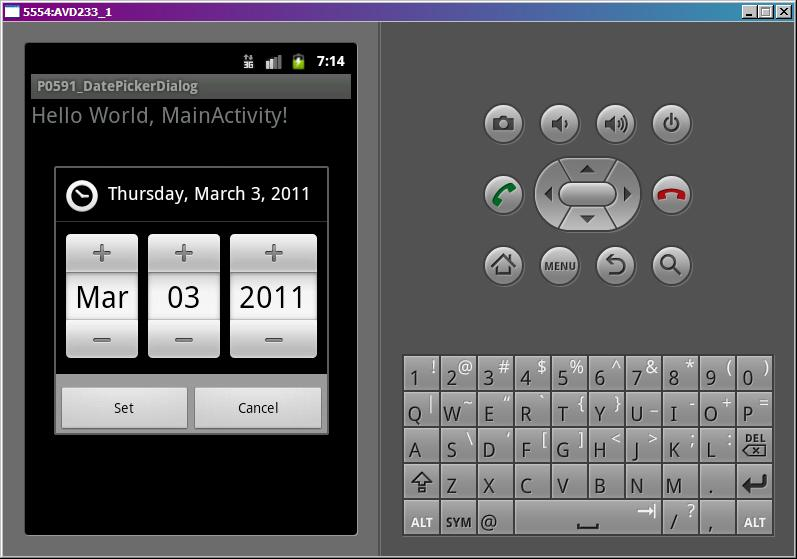
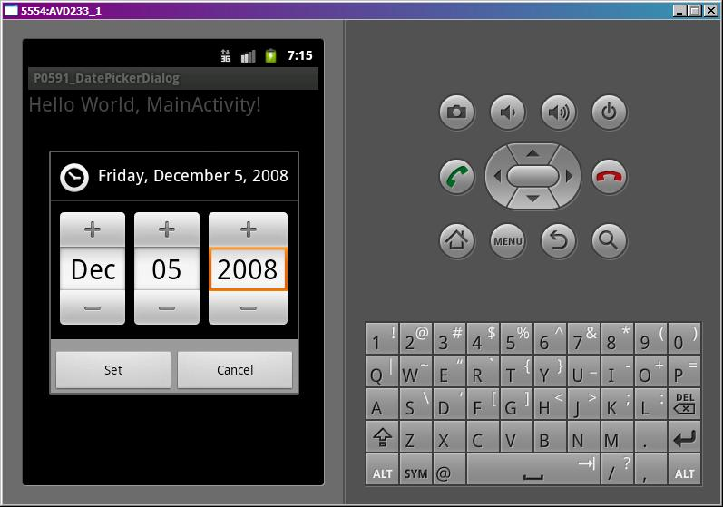
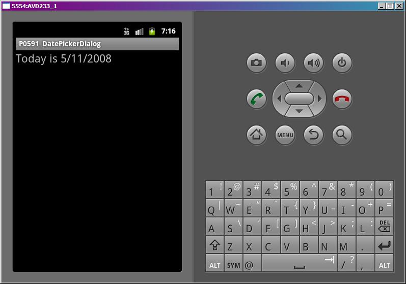

В этом уроке:
- используем DatePickerDialog
Урок будет аналогичен прошлому, но теперь в диалоге мы будем задавать дату, а не время. Такой диалог называется DatePickerDialog.
Сделаем простое приложение. На экране будет TextView, на него можно будет нажать и появится диалог для выбора даты. После выбора она отобразится в TextView.
Создадим проект:
Project name: P0591_DatePickerDialog
Build Target: Android 4.0
Application name: DatePickerDialog
Package name: ru.startandroid.develop.p0591datepickerdialog
Create Activity: MainActivity
Экран main.xml:
<?xml version="1.0" encoding="utf-8"?>
<LinearLayout
xmlns:android="http://schemas.android.com/apk/res/android"
android:layout_width="fill_parent"
android:layout_height="fill_parent"
android:orientation="vertical">
<TextView
android:id="@+id/tvDate"
android:layout_width="fill_parent"
android:layout_height="wrap_content"
android:clickable="true"
android:onClick="onclick"
android:text="@string/hello"
android:textSize="22sp">
</TextView>
</LinearLayout>Код MainActivity.java:
package ru.startandroid.develop.p0591datepickerdialog;
import android.app.Activity;
import android.app.DatePickerDialog;
import android.app.DatePickerDialog.OnDateSetListener;
import android.app.Dialog;
import android.os.Bundle;
import android.view.View;
import android.widget.DatePicker;
import android.widget.TextView;
public class MainActivity extends Activity {
int DIALOG_DATE = 1;
int myYear = 2011;
int myMonth = 02;
int myDay = 03;
TextView tvDate;
/** Called when the activity is first created. */
public void onCreate(Bundle savedInstanceState) {
super.onCreate(savedInstanceState);
setContentView(R.layout.main);
tvDate = (TextView) findViewById(R.id.tvDate);
}
public void onclick(View view) {
showDialog(DIALOG_DATE);
}
protected Dialog onCreateDialog(int id) {
if (id == DIALOG_DATE) {
DatePickerDialog tpd = new DatePickerDialog(this, myCallBack, myYear, myMonth, myDay);
return tpd;
}
return super.onCreateDialog(id);
}
OnDateSetListener myCallBack = new OnDateSetListener() {
public void onDateSet(DatePicker view, int year, int monthOfYear,
int dayOfMonth) {
myYear = year;
myMonth = monthOfYear;
myDay = dayOfMonth;
tvDate.setText("Today is " + myDay + "/" + myMonth + "/" + myYear);
}
};
}В onCreate находим TextView.
В onClick вызываем метод showDialog и передаем ему ID диалога. Этот метод (showDialog) создает диалог с помощью отдельного метода и показывает его. ID используется для указания, какой именно диалог создавать и показывать.
Метод onCreateDialog – это и есть отдельный метод, который вызывается в showDialog для создания диалога. В этом методе мы смотрим, какой ID пришел на вход, создаем соответствующий диалог и возвращаем его.
В нашем случае мы создаем DatePickerDialog, используя конструктор:
context – контекст
callBack – это обработчик с интерфейсом DatePickerDialog.OnDateSetListener, метод которого срабатывает при нажатии кнопки ОК на диалоге
year – год, который покажет диалог
monthOfYear – месяц, который покажет диалог
dayOfMonth – день, который покажет диалог
myCallBack – объект, реализующий интерфейс DatePickerDialog.OnDateSetListener. У него только один метод – onDateSet, который предоставляет нам DatePicker из диалога, и год, месяц и день, которые он показывает. Т.е. то, что мы ввели в диалоге.
Эти данные мы пишем в tvDate.
Все сохраним и запустим. Нажмем на TextView. Появился диалог для ввода даты.

Сейчас он показывает 3 марта 2011, т.к. мы при создании передали ему значения myYear, myMonth и myDay. Месяцы он считает, начиная с нуля.
Поменяем значения

и нажмем Set.

Текст показал новые значения. Обратите внимание, что месяц декабрь он выдал как число 11. Месяцы нумеруются с нуля.
Диалог также можно закрыть кнопкой Cancel или кнопкой Back на эмуляторе. В этом случае обработчик не сработает и текст не обновится.